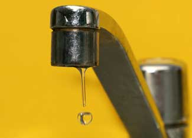

How To Fix A Leaking Faucet
You can repair a dripping faucet with a few simple tools and inexpensive replacement parts.
By Troy Griepentrog
Jan. 8, 2009
Drip … drip … drip. You can fix that leaking faucet that's been making you crazy. It's easier than you think - and much less expensive than hiring a plumber. And although there are many styles and models of faucets, the process of repairing a dripping faucet is similar for all of them.
Types of Faucets
The first step is to figure out what type of faucet you're trying to fix. Compression faucets control water by pressing a stopper against a metal opening inside the faucet. It's like tightening the top on a bottle: As you turn the lid, it becomes tighter until it stops liquid from pouring out. If a faucet has separate handles for hot and cold water, it's probably a compression faucet.
There are three general styles of another type - washerless faucets: ball, ceramic disc and cartridge. These all work on the same principle: aligning two holes within the faucet to allow water through and moving the holes out of alignment to stop the flow of water. Washerless faucets usually have only one handle, but some cartridge faucets have two handles.
Regardless of which type of faucet you have, leaks most often stem from plastic or rubber seals (washers, seals, O-rings) wearing out and allowing a little bit of water to sneak past. It takes only a slightly worn or damaged seal to allow a drip of water to pass by every few seconds.
How to Fix a Faucet
Common tools you'll need for faucet repairs include screwdrivers (both flat and Phillips), pliers and a channel lock (adjustable jaw pliers). Then follow these easy steps:
- Turn off the water supply to the sink. Valves are usually under the counter close to the wall. It's also a good idea to close the drain of the sink so any small parts that fall into the sink don't go down the drain.
- Open the faucet to release any water pressure in the lines.
- Remove the handle, which is usually held in place with a screw or Allen screw (screws with a hexagonal pattern in the head). The screw may be covered with a plastic, metal or rubber cover you'll need to pop off using a flat screwdriver or butter knife.
- If the faucet has a large metal nut holding the internal parts in place, check if it's loose. Tightening that nut with a channel lock pliers may stop the leak. If not, remove the nut, screw or spring-loaded metal ring that holds the internal parts in place.
- Pull out the internal pieces with a pair of pliers or the channel lock pliers, carefully noting how the pieces fit together. If the faucet contains a cartridge, don't take it apart; simply replace it with a new one. It's possible to install cartridges backward so you get hot water when you expect cold, and vice versa.
- Replace the washers, O-ring or seals (and springs if there are any behind the seals in a ball faucet). Get precise replacements from the hardware store. Remember it takes only a small gap to allow water to pass through. Hot and cold assemblies may have slightly different parts.
- If metal parts have mineral deposits on them, clean them with vinegar and a stiff-bristled brush, being careful not to scratch the metal. In some instances, the uneven metal is the cause of the leak. You can get special tools to recut the metal of some faucets to make it smooth again, but it may be just as easy to replace the whole faucet if that's the case.
- Reassemble the pieces and turn on the water supply to test your work. It may take a few seconds for the air to get out of the line, so turn the water on slowly and expect a bit of sputtering.
Most parts of a faucet are made of soft metal that scratches easily. To protect the outside parts, cover them with masking tape before applying a plier.
For more information on do-it-yourself plumbing, read
Be Your Own Plumber,
How to Unclog Drains Without Chemicals,
How to Solder Copper Pipes Successfully and
Try PEX Plumbing.
Have you had an interesting experience fixing a dripping faucet? Share your story in the comments section below.

ISTOCKPHOTO/NICKY BLADE
Fixing a dripping faucet yourself will save you money (and may save your sanity).
|
|
|